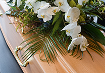

簡單、尊重、安心─提供最真誠的告別服務
在喪失親人時，時間與情感都變得格外珍貴。我們推出了「簡約型專案」，旨在為您提供一個簡單、高效且具尊嚴的葬禮安排，讓您可以專心陪伴親人，無需擔憂繁瑣的後事。

01
臨終關懷
- ‧臨終關懷與治喪規劃諮詢服務
- ‧臨終前開示與助念（提供心靈慰藉，助往生者安詳離世）
- ‧全方位治喪規劃諮詢，涵蓋：
- 01.保險理賠（壽險、勞保、農保等申請與協助）
- 02.稅務法規（遺產、贈與稅等法規諮詢）
- 03.傳統禮俗（喪禮儀節、家族習俗建議）
- 04.社會福利資源（喪葬補助、政府相關補助申請）
02
遺體接運
禮儀社配備有專業的接運車輛，這些車輛具備適合遺體運送的設施，如專用的車廂、穩固的支架、冷藏設備等，以保證遺體在運送過程中的穩定與安全。
我們會根據家屬需求，安排家屬陪同前往接運的目的地，提供情感支持，並將遺體將安全送達指定的目的地（如殯儀館、火葬場、墓地等），並按照事先的安排進行後續的安置。
03
設定靈堂
- ‧私人會館場地使用（舒適寧靜的環境，提供莊重追思空間）
- ‧專業誦經服務（由法師誦經超渡，為亡者祈福）
- ‧禮體淨身SPA儀式（專業團隊細心護理，讓摯愛安詳離世）
- ‧豎靈用品套組（完整祭祀用品，符合傳統禮儀）
- ‧靈位牌（中式魂帛／亡者牌位）
- ‧招魂幡、竹枝（引導亡者靈魂歸位）
- ‧環香、環香架、香（供奉與祈禱）
- ‧童男女、蓮花燈（象徵引路與祝福）
- ‧銀紙、唸佛機（助亡者往生善道）
04
安靈法事
- ‧安靈誦經服務：由專業法師誦經祈福，安撫亡者靈魂，助其安息。
- ‧公祭圓七誦經：奠禮當日，由法師誦經迴向，完成圓七儀式，為亡者祈願超渡。
05
治喪協調服務
- ‧全程治喪手續代辦：協助辦理各項必要手續，減輕家屬負擔。
- ‧治喪流程與時間規劃：專業安排儀式時間與流程，確保順利進行。
- ‧禮廳租用與火化許可證申辦：代辦場地租用、火化許可證，確保一切合規順暢。
- ‧塔位參訪專車服務：安排專車與專員陪同，帶看合適塔位，提供專業建議。

06
入殮、封棺
- ‧入殮誦經：由專業法師主持入殮儀式，誦經祈福，助往生者安詳離世。
- ‧放板人員與專車：安排專業團隊與專車，確保儀式順利進行。
- ‧高級木質火化棺（標準尺寸，加大棺木另計）。
- ‧壽衣一套
- ‧皆包含 鞋、襪、褲、帽、手套、荷包 等配件（加大尺寸另計）。
- ‧緞繡蓮花被（含上下被）。
- ‧壽內用品一組：梳子、扇子、鏡子、過山褲、棺底蓆、口含銀等。
陪棺庫錢 四包（超出數量另計）。
辭生儀式：包含放手尾錢與吉祥話，表達家屬祝福與不捨之情。
07
告別式奠禮
- ‧專業誦經法師一名（引領儀式，為亡者誦經祈福）。
- ‧專業司儀一名（主持儀式，確保流程莊重順暢）。
- ‧移靈（化妝室 → 禮堂）
- ‧火化（禮堂 → 火化場）
- ‧告別式場地佈置
- 01.禮堂佈置團隊：專業工人與服務人員全程協助。
- 02.鮮花藝術佈置
- 03.現場設備：
- -燈光設備一組，營造溫馨莊重氛圍。
- -高級音響與麥克風一組，確保儀式清晰流暢。
- -背景音樂播放，增添追思氣氛。
- ‧禮儀用品與配件
- 01.黑袍孝服（提供免費租借 5 件內）。
- 02.禮儀文具盒一式。
- 03.胸花一包，供孝屬及賓客佩戴。
- 04.拈香粉、香燭、金銀紙（完整供奉用品組）。
- 05.杯水 2 箱，供賓客使用。
- ‧祭品供奉
素祭品：三牲一付（葷或素二擇一）。
水果供品：三滿盤，象徵圓滿吉祥。
清酒一瓶 或 茶一瓶（二擇一）。
菜碗一組（六道菜，可選葷或素）。
08
發引火化暨封罐服務
- ‧專業誦經法師一名（引領發引儀式，誦經祈福，助亡者安息）。
- ‧移靈扶柩服務：專業扶柩人員兩名，確保儀式莊重順利。
- ‧發引用品：
- 01.棺被一件、包布一條（完整覆蓋，表達敬意）。
- 02.香、燭、金銀紙（依禮俗供奉，助亡者安息）。
- ‧火化與後續處理
- 01.廂型靈車（含駕駛）：從奠禮地點至火化場（限 5 公里內，不使用恕不減免）。
- 02.契約指定骨灰罐：包含 刻字、貼金、彩色玉相鑲嵌，打造專屬紀念。
- 03.撿骨與封罐儀式：專業處理，確保莊重圓滿。

09
安奉晉塔服務
- ‧專屬服務人員一名（全程引導並協助安奉儀式）。
- ‧祭拜供品：完整供奉 香、燭、金銀紙一組，表達追思敬意。
- ‧晉塔禮車一部（限同縣市，超出範圍按公里計價）。
收費明細
品名
規格
數量
售價
安靈用品
- ‧靈位牌（中式魂帛／亡者牌位）
- ‧招魂幡、竹枝
- ‧環香、環香架、香
- ‧童男女、蓮花燈
- ‧銀紙、唸佛機
1式
2,000
靈柩
環保平口棺
1具
12,000
靈柩專車
高頂廂型專用靈車
1具
12,000
壽衣
男士款（擇一）：
福祿長袍馬掛（傳統款）或莊重西服套裝（現代款）
女士款（擇一）：典雅鳳仙裝（傳統漢服風格）或高貴旗袍套裝（展現端莊氣質）
福祿長袍馬掛（傳統款）或莊重西服套裝（現代款）
女士款（擇一）：典雅鳳仙裝（傳統漢服風格）或高貴旗袍套裝（展現端莊氣質）
1套
5,200
安奉隨身福物
- ‧梳子（整理儀容，象徵清淨無憂）
- ‧扇子（消災解厄，引渡清涼自在）
- ‧鏡子（照見光明，引領前路）
- ‧過山褲（象徵平安渡過人生旅程）
- ‧棺底蓆（讓往生者安息舒適）
- ‧口含銀（表達子孫孝心，助往生者帶財富而去）
- ‧蓮花福被（象徵蓮花座安奉，往生極樂）
- ‧陪棺庫錢四包（表達子孫敬意，超出數量另計）
- ‧辭生、放手尾錢（讓往生者無牽掛地安心離去）
- ‧封釘吉祥話（完成儀式，祈願圓滿）
1套
3,000
骨灰罐
黑花岡
1個
11,000
總價│70,000
top